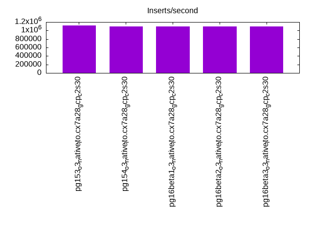
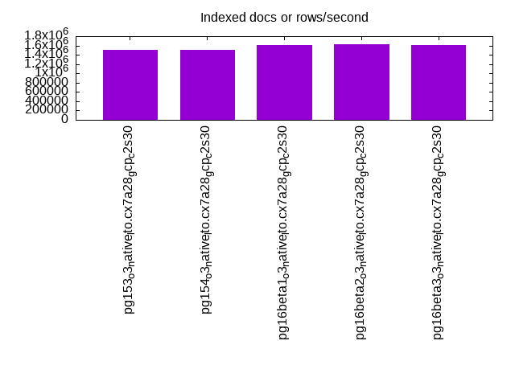
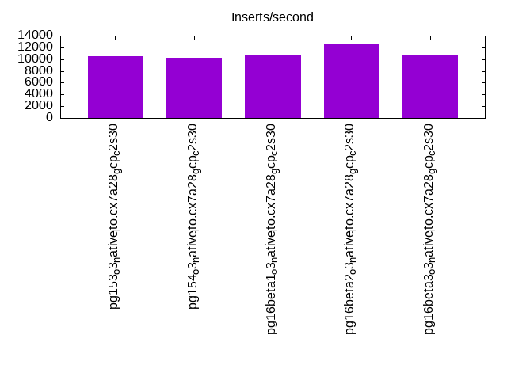
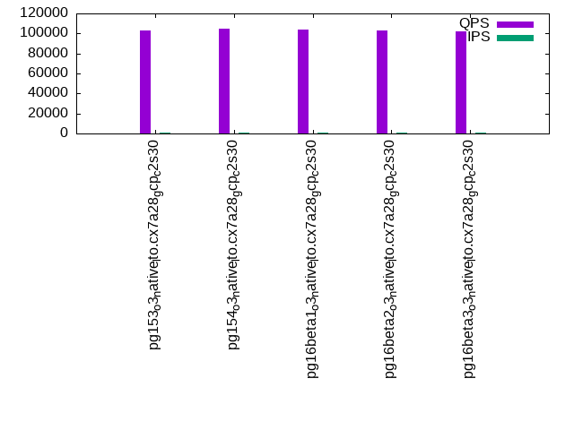
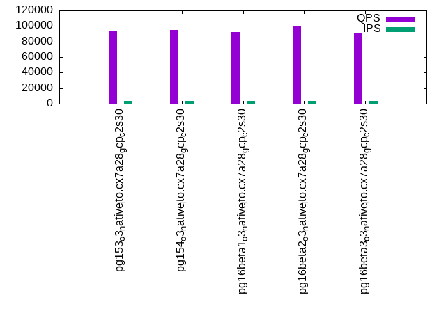
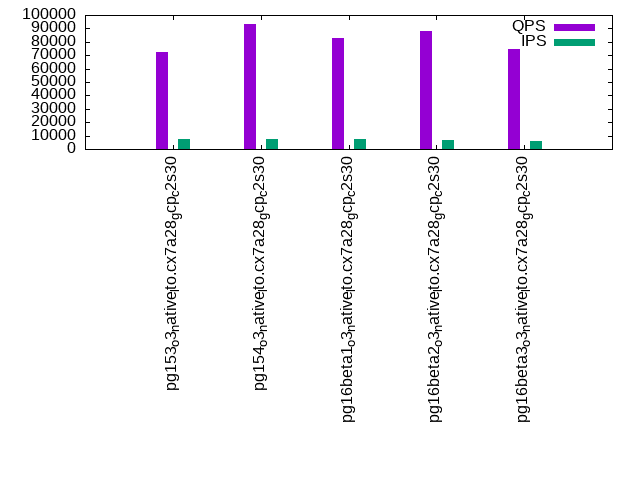

This is a report for the insert benchmark with 4000M docs and 8 client(s). It is generated by scripts (bash, awk, sed) and Tufte might not be impressed. An overview of the insert benchmark is here and a short update is here. Below, by DBMS, I mean DBMS+version.config. An example is my8020.c10b40 where my means MySQL, 8020 is version 8.0.20 and c10b40 is the name for the configuration file.
The test server is a c2-standard-30 with 15 cores, hyperthreads disabled, 120G RAM and XFS with SW RAID 0 across 4 NVMe SSD. The benchmark was run with 8 clients and there were 1 or 3 connections per client (1 for queries or inserts without rate limits, 1+1 for rate limited inserts+deletes). It uses 8 tables, 1 per client. It loads 500M rows per table without secondary indexes, creates secondary indexes, then inserts 40M rows per table with a delete per insert to avoid growing the table. It then does 3 read+write tests for 3600s each that do queries as fast as possible with 100, 500 and then 1000 inserts/second/client concurrent with the queries. There are also deletes to match the inserts and avoid growing the table. The database is larger than memory. Clients and the DBMS share one server. The per-database configs are in the per-database subdirectories here.
The tested DBMS are:
The numbers are inserts/s for l.i0 and l.i1, indexed docs (or rows) /s for l.x and queries/s for q*.2. The values are the average rate over the entire test for inserts (IPS) and queries (QPS). The range of values for IPS and QPS is split into 3 parts: bottom 25%, middle 50%, top 25%. Values in the bottom 25% have a red background, values in the top 25% have a green background and values in the middle have no color. A gray background is used for values that can be ignored because the DBMS did not sustain the target insert rate. Red backgrounds are not used when the minimum value is within 80% of the max value.
| dbms | l.i0 | l.x | l.i1 | q100.1 | q500.1 | q1000.1 |
|---|---|---|---|---|---|---|
| pg153_o3_native_lto.cx7a28_gcp_c2s30 | 1114206 | 1498726 | 10488 | 102673 | 93484 | 72343 |
| pg154_o3_native_lto.cx7a28_gcp_c2s30 | 1093494 | 1506629 | 10245 | 104580 | 94926 | 93230 |
| pg16beta1_o3_native_lto.cx7a28_gcp_c2s30 | 1092896 | 1612944 | 10691 | 103855 | 92613 | 82913 |
| pg16beta2_o3_native_lto.cx7a28_gcp_c2s30 | 1100110 | 1628042 | 12476 | 102875 | 100236 | 88094 |
| pg16beta3_o3_native_lto.cx7a28_gcp_c2s30 | 1097394 | 1605821 | 10694 | 102343 | 90757 | 74954 |
This table has relative throughput, throughput for the DBMS relative to the DBMS in the first line, using the absolute throughput from the previous table. Values less than 0.95 have a yellow background. Values greater than 1.05 have a blue background.
| dbms | l.i0 | l.x | l.i1 | q100.1 | q500.1 | q1000.1 |
|---|---|---|---|---|---|---|
| pg153_o3_native_lto.cx7a28_gcp_c2s30 | 1.00 | 1.00 | 1.00 | 1.00 | 1.00 | 1.00 |
| pg154_o3_native_lto.cx7a28_gcp_c2s30 | 0.98 | 1.01 | 0.98 | 1.02 | 1.02 | 1.29 |
| pg16beta1_o3_native_lto.cx7a28_gcp_c2s30 | 0.98 | 1.08 | 1.02 | 1.01 | 0.99 | 1.15 |
| pg16beta2_o3_native_lto.cx7a28_gcp_c2s30 | 0.99 | 1.09 | 1.19 | 1.00 | 1.07 | 1.22 |
| pg16beta3_o3_native_lto.cx7a28_gcp_c2s30 | 0.98 | 1.07 | 1.02 | 1.00 | 0.97 | 1.04 |
This lists the average rate of inserts/s for the tests that do inserts concurrent with queries. For such tests the query rate is listed in the table above. The read+write tests are setup so that the insert rate should match the target rate every second. Cells that are not at least 95% of the target have a red background to indicate a failure to satisfy the target.
| dbms | q100.1 | q500.1 | q1000.1 |
|---|---|---|---|
| pg153_o3_native_lto.cx7a28_gcp_c2s30 | 798 | 3987 | 7717 |
| pg154_o3_native_lto.cx7a28_gcp_c2s30 | 798 | 3987 | 7319 |
| pg16beta1_o3_native_lto.cx7a28_gcp_c2s30 | 797 | 3988 | 7155 |
| pg16beta2_o3_native_lto.cx7a28_gcp_c2s30 | 797 | 3987 | 7036 |
| pg16beta3_o3_native_lto.cx7a28_gcp_c2s30 | 797 | 3988 | 6210 |
| target | 800 | 4000 | 8000 |
l.i0: load without secondary indexes. Graphs for performance per 1-second interval are here.
Average throughput:
Insert response time histogram: each cell has the percentage of responses that take <= the time in the header and max is the max response time in seconds. For the max column values in the top 25% of the range have a red background and in the bottom 25% of the range have a green background. The red background is not used when the min value is within 80% of the max value.
| dbms | 256us | 1ms | 4ms | 16ms | 64ms | 256ms | 1s | 4s | 16s | gt | max |
|---|---|---|---|---|---|---|---|---|---|---|---|
| pg153_o3_native_lto.cx7a28_gcp_c2s30 | 97.447 | 2.508 | 0.029 | 0.009 | 0.007 | nonzero | 0.574 | ||||
| pg154_o3_native_lto.cx7a28_gcp_c2s30 | 96.869 | 3.093 | 0.026 | 0.006 | 0.005 | nonzero | 0.885 | ||||
| pg16beta1_o3_native_lto.cx7a28_gcp_c2s30 | 97.296 | 2.664 | 0.026 | 0.007 | 0.006 | 0.001 | nonzero | 1.062 | |||
| pg16beta2_o3_native_lto.cx7a28_gcp_c2s30 | 97.280 | 2.678 | 0.027 | 0.008 | 0.006 | 0.001 | 0.651 | ||||
| pg16beta3_o3_native_lto.cx7a28_gcp_c2s30 | 97.299 | 2.660 | 0.029 | 0.007 | 0.005 | nonzero | nonzero | 2.134 |
Performance metrics for the DBMS listed above. Some are normalized by throughput, others are not. Legend for results is here.
ips qps rps rmbps wps wmbps rpq rkbpq wpi wkbpi csps cpups cspq cpupq dbgb1 dbgb2 rss maxop p50 p99 tag 1114206 0 545 4.3 1457.4 282.3 0.000 0.004 0.001 0.259 92740 84.7 0.083 11 382.7 414.8 3.3 0.574 143293 83210 4000m.pg153_o3_native_lto.cx7a28_gcp_c2s30 1093494 0 547 4.3 1447.9 282.2 0.001 0.004 0.001 0.264 91711 84.1 0.084 12 382.7 414.8 12.0 0.885 140346 81441 4000m.pg154_o3_native_lto.cx7a28_gcp_c2s30 1092896 0 548 4.3 1429.4 276.2 0.001 0.004 0.001 0.259 91453 84.2 0.084 12 382.7 414.8 5.0 1.062 140548 66451 4000m.pg16beta1_o3_native_lto.cx7a28_gcp_c2s30 1100110 0 545 4.3 1446.1 280.7 0.000 0.004 0.001 0.261 92505 84.1 0.084 11 382.7 414.8 7.9 0.651 141846 74119 4000m.pg16beta2_o3_native_lto.cx7a28_gcp_c2s30 1097394 0 547 4.3 1450.2 281.0 0.000 0.004 0.001 0.262 91306 84.6 0.083 12 382.7 414.8 9.4 2.134 140766 85636 4000m.pg16beta3_o3_native_lto.cx7a28_gcp_c2s30
l.x: create secondary indexes.
Average throughput:
Performance metrics for the DBMS listed above. Some are normalized by throughput, others are not. Legend for results is here.
ips qps rps rmbps wps wmbps rpq rkbpq wpi wkbpi csps cpups cspq cpupq dbgb1 dbgb2 rss maxop p50 p99 tag 1498726 0 3618 748.5 1278.2 282.0 0.002 0.511 0.001 0.193 36711 34.2 0.024 3 735.2 767.1 56.7 0.002 NA NA 4000m.pg153_o3_native_lto.cx7a28_gcp_c2s30 1506629 0 3689 753.9 1284.3 282.9 0.002 0.512 0.001 0.192 36992 34.4 0.025 3 735.2 767.0 56.6 0.002 NA NA 4000m.pg154_o3_native_lto.cx7a28_gcp_c2s30 1612944 0 2916 654.0 1364.6 306.1 0.002 0.415 0.001 0.194 45961 36.0 0.028 3 735.2 767.0 56.8 0.025 NA NA 4000m.pg16beta1_o3_native_lto.cx7a28_gcp_c2s30 1628042 0 2970 663.8 1386.0 311.4 0.002 0.417 0.001 0.196 45824 35.8 0.028 3 735.2 767.0 56.9 0.184 NA NA 4000m.pg16beta2_o3_native_lto.cx7a28_gcp_c2s30 1605821 0 2917 657.0 1359.7 302.3 0.002 0.419 0.001 0.193 46247 35.9 0.029 3 735.2 767.1 57.0 0.002 NA NA 4000m.pg16beta3_o3_native_lto.cx7a28_gcp_c2s30
l.i1: continue load after secondary indexes created. Graphs for performance per 1-second interval are here.
Average throughput:
Insert response time histogram: each cell has the percentage of responses that take <= the time in the header and max is the max response time in seconds. For the max column values in the top 25% of the range have a red background and in the bottom 25% of the range have a green background. The red background is not used when the min value is within 80% of the max value.
| dbms | 256us | 1ms | 4ms | 16ms | 64ms | 256ms | 1s | 4s | 16s | gt | max |
|---|---|---|---|---|---|---|---|---|---|---|---|
| pg153_o3_native_lto.cx7a28_gcp_c2s30 | 13.586 | 54.976 | 31.411 | 0.025 | 0.002 | 0.921 | |||||
| pg154_o3_native_lto.cx7a28_gcp_c2s30 | 32.071 | 42.255 | 25.626 | 0.045 | 0.003 | nonzero | 1.172 | ||||
| pg16beta1_o3_native_lto.cx7a28_gcp_c2s30 | 28.788 | 37.415 | 33.767 | 0.028 | 0.002 | nonzero | 1.784 | ||||
| pg16beta2_o3_native_lto.cx7a28_gcp_c2s30 | 36.822 | 39.577 | 23.561 | 0.036 | 0.003 | nonzero | 1.187 | ||||
| pg16beta3_o3_native_lto.cx7a28_gcp_c2s30 | 34.924 | 39.387 | 25.639 | 0.047 | 0.003 | nonzero | 1.301 |
Delete response time histogram: each cell has the percentage of responses that take <= the time in the header and max is the max response time in seconds. For the max column values in the top 25% of the range have a red background and in the bottom 25% of the range have a green background. The red background is not used when the min value is within 80% of the max value.
| dbms | 256us | 1ms | 4ms | 16ms | 64ms | 256ms | 1s | 4s | 16s | gt | max |
|---|---|---|---|---|---|---|---|---|---|---|---|
| pg153_o3_native_lto.cx7a28_gcp_c2s30 | 61.001 | 6.219 | 1.915 | 6.381 | 14.400 | 10.082 | 0.002 | 0.952 | |||
| pg154_o3_native_lto.cx7a28_gcp_c2s30 | 70.309 | 4.361 | 0.919 | 3.490 | 11.623 | 9.281 | 0.018 | 0.747 | |||
| pg16beta1_o3_native_lto.cx7a28_gcp_c2s30 | 66.122 | 8.515 | 0.814 | 2.653 | 9.291 | 12.598 | 0.007 | 0.723 | |||
| pg16beta2_o3_native_lto.cx7a28_gcp_c2s30 | 70.702 | 4.903 | 0.696 | 2.609 | 10.894 | 10.194 | 0.003 | 0.786 | |||
| pg16beta3_o3_native_lto.cx7a28_gcp_c2s30 | 69.171 | 5.167 | 0.694 | 2.583 | 12.071 | 10.308 | 0.006 | nonzero | 1.028 |
Performance metrics for the DBMS listed above. Some are normalized by throughput, others are not. Legend for results is here.
ips qps rps rmbps wps wmbps rpq rkbpq wpi wkbpi csps cpups cspq cpupq dbgb1 dbgb2 rss maxop p50 p99 tag 10488 0 11439 129.5 20157.0 310.5 1.091 12.645 1.922 30.315 28728 37.2 2.739 532 773.1 805.1 47.1 0.921 250 200 4000m.pg153_o3_native_lto.cx7a28_gcp_c2s30 10245 0 8309 90.8 16543.4 272.0 0.811 9.079 1.615 27.187 22263 30.8 2.173 451 771.4 803.4 71.0 1.172 350 200 4000m.pg154_o3_native_lto.cx7a28_gcp_c2s30 10691 0 10297 113.4 18233.0 298.0 0.963 10.863 1.705 28.543 26215 37.1 2.452 521 773.9 805.9 70.7 1.784 499 300 4000m.pg16beta1_o3_native_lto.cx7a28_gcp_c2s30 12476 0 9646 114.5 19296.1 341.1 0.773 9.402 1.547 27.998 25970 36.7 2.082 441 776.2 808.2 70.3 1.187 350 250 4000m.pg16beta2_o3_native_lto.cx7a28_gcp_c2s30 10694 0 8813 104.7 17284.4 303.5 0.824 10.021 1.616 29.056 23352 31.7 2.184 445 775.4 807.4 70.1 1.301 1649 699 4000m.pg16beta3_o3_native_lto.cx7a28_gcp_c2s30
q100.1: range queries with 100 insert/s per client. Graphs for performance per 1-second interval are here.
Average throughput:
Query response time histogram: each cell has the percentage of responses that take <= the time in the header and max is the max response time in seconds. For max values in the top 25% of the range have a red background and in the bottom 25% of the range have a green background. The red background is not used when the min value is within 80% of the max value.
| dbms | 256us | 1ms | 4ms | 16ms | 64ms | 256ms | 1s | 4s | 16s | gt | max |
|---|---|---|---|---|---|---|---|---|---|---|---|
| pg153_o3_native_lto.cx7a28_gcp_c2s30 | 99.827 | 0.171 | 0.001 | nonzero | nonzero | 0.033 | |||||
| pg154_o3_native_lto.cx7a28_gcp_c2s30 | 99.837 | 0.162 | 0.001 | nonzero | nonzero | nonzero | nonzero | 0.277 | |||
| pg16beta1_o3_native_lto.cx7a28_gcp_c2s30 | 99.824 | 0.175 | 0.001 | nonzero | nonzero | 0.049 | |||||
| pg16beta2_o3_native_lto.cx7a28_gcp_c2s30 | 99.743 | 0.256 | 0.001 | nonzero | 0.015 | ||||||
| pg16beta3_o3_native_lto.cx7a28_gcp_c2s30 | 99.773 | 0.226 | 0.001 | nonzero | 0.015 |
Insert response time histogram: each cell has the percentage of responses that take <= the time in the header and max is the max response time in seconds. For max values in the top 25% of the range have a red background and in the bottom 25% of the range have a green background. The red background is not used when the min value is within 80% of the max value.
| dbms | 256us | 1ms | 4ms | 16ms | 64ms | 256ms | 1s | 4s | 16s | gt | max |
|---|---|---|---|---|---|---|---|---|---|---|---|
| pg153_o3_native_lto.cx7a28_gcp_c2s30 | 35.142 | 64.856 | 0.002 | 0.074 | |||||||
| pg154_o3_native_lto.cx7a28_gcp_c2s30 | 8.526 | 9.663 | 81.800 | 0.010 | 0.151 | ||||||
| pg16beta1_o3_native_lto.cx7a28_gcp_c2s30 | 12.436 | 3.875 | 83.661 | 0.028 | 0.114 | ||||||
| pg16beta2_o3_native_lto.cx7a28_gcp_c2s30 | 12.292 | 4.911 | 82.785 | 0.012 | 0.078 | ||||||
| pg16beta3_o3_native_lto.cx7a28_gcp_c2s30 | 9.155 | 9.540 | 81.299 | 0.007 | 0.071 |
Delete response time histogram: each cell has the percentage of responses that take <= the time in the header and max is the max response time in seconds. For max values in the top 25% of the range have a red background and in the bottom 25% of the range have a green background. The red background is not used when the min value is within 80% of the max value.
| dbms | 256us | 1ms | 4ms | 16ms | 64ms | 256ms | 1s | 4s | 16s | gt | max |
|---|---|---|---|---|---|---|---|---|---|---|---|
| pg153_o3_native_lto.cx7a28_gcp_c2s30 | 22.403 | 25.446 | 25.656 | 13.708 | 12.785 | 0.002 | 0.077 | ||||
| pg154_o3_native_lto.cx7a28_gcp_c2s30 | 30.752 | 30.965 | 33.983 | 4.297 | 0.003 | 0.021 | |||||
| pg16beta1_o3_native_lto.cx7a28_gcp_c2s30 | 54.668 | 32.571 | 0.257 | 1.071 | 11.432 | 0.041 | |||||
| pg16beta2_o3_native_lto.cx7a28_gcp_c2s30 | 19.108 | 24.648 | 17.300 | 32.281 | 6.663 | 0.038 | |||||
| pg16beta3_o3_native_lto.cx7a28_gcp_c2s30 | 32.977 | 26.264 | 25.845 | 2.411 | 12.500 | 0.002 | 0.065 |
Performance metrics for the DBMS listed above. Some are normalized by throughput, others are not. Legend for results is here.
ips qps rps rmbps wps wmbps rpq rkbpq wpi wkbpi csps cpups cspq cpupq dbgb1 dbgb2 rss maxop p50 p99 tag 798 102673 1559 13.3 1638.1 25.0 0.015 0.132 2.054 32.077 394194 53.5 3.839 78 773.1 805.2 70.9 0.033 12898 9497 4000m.pg153_o3_native_lto.cx7a28_gcp_c2s30 798 104580 1545 13.1 1640.4 23.9 0.015 0.128 2.057 30.666 401477 52.9 3.839 76 771.5 803.6 70.9 0.277 12962 12738 4000m.pg154_o3_native_lto.cx7a28_gcp_c2s30 797 103855 1647 14.0 1642.0 25.4 0.016 0.138 2.059 32.643 399088 53.1 3.843 77 774.0 806.0 70.9 0.049 13159 5354 4000m.pg16beta1_o3_native_lto.cx7a28_gcp_c2s30 797 102875 1770 15.0 1737.2 27.1 0.017 0.149 2.179 34.841 395506 53.4 3.845 78 776.2 808.2 70.9 0.015 12946 12626 4000m.pg16beta2_o3_native_lto.cx7a28_gcp_c2s30 797 102343 1730 14.7 1794.8 27.7 0.017 0.147 2.251 35.569 393384 53.3 3.844 78 775.4 807.5 70.9 0.015 12898 5242 4000m.pg16beta3_o3_native_lto.cx7a28_gcp_c2s30
q500.1: range queries with 500 insert/s per client. Graphs for performance per 1-second interval are here.
Average throughput:
Query response time histogram: each cell has the percentage of responses that take <= the time in the header and max is the max response time in seconds. For max values in the top 25% of the range have a red background and in the bottom 25% of the range have a green background. The red background is not used when the min value is within 80% of the max value.
| dbms | 256us | 1ms | 4ms | 16ms | 64ms | 256ms | 1s | 4s | 16s | gt | max |
|---|---|---|---|---|---|---|---|---|---|---|---|
| pg153_o3_native_lto.cx7a28_gcp_c2s30 | 99.846 | 0.151 | 0.002 | 0.001 | nonzero | 0.028 | |||||
| pg154_o3_native_lto.cx7a28_gcp_c2s30 | 99.794 | 0.202 | 0.003 | 0.001 | nonzero | 0.028 | |||||
| pg16beta1_o3_native_lto.cx7a28_gcp_c2s30 | 99.836 | 0.162 | 0.002 | 0.001 | nonzero | 0.028 | |||||
| pg16beta2_o3_native_lto.cx7a28_gcp_c2s30 | 99.844 | 0.150 | 0.004 | 0.001 | nonzero | 0.033 | |||||
| pg16beta3_o3_native_lto.cx7a28_gcp_c2s30 | 99.801 | 0.195 | 0.003 | 0.001 | nonzero | 0.027 |
Insert response time histogram: each cell has the percentage of responses that take <= the time in the header and max is the max response time in seconds. For max values in the top 25% of the range have a red background and in the bottom 25% of the range have a green background. The red background is not used when the min value is within 80% of the max value.
| dbms | 256us | 1ms | 4ms | 16ms | 64ms | 256ms | 1s | 4s | 16s | gt | max |
|---|---|---|---|---|---|---|---|---|---|---|---|
| pg153_o3_native_lto.cx7a28_gcp_c2s30 | 8.934 | 91.060 | 0.006 | 0.102 | |||||||
| pg154_o3_native_lto.cx7a28_gcp_c2s30 | 4.783 | 95.215 | 0.002 | 0.074 | |||||||
| pg16beta1_o3_native_lto.cx7a28_gcp_c2s30 | 1.236 | 9.515 | 89.228 | 0.020 | 0.121 | ||||||
| pg16beta2_o3_native_lto.cx7a28_gcp_c2s30 | 0.210 | 15.484 | 84.306 | 0.059 | |||||||
| pg16beta3_o3_native_lto.cx7a28_gcp_c2s30 | 12.511 | 87.489 | nonzero | 0.076 |
Delete response time histogram: each cell has the percentage of responses that take <= the time in the header and max is the max response time in seconds. For max values in the top 25% of the range have a red background and in the bottom 25% of the range have a green background. The red background is not used when the min value is within 80% of the max value.
| dbms | 256us | 1ms | 4ms | 16ms | 64ms | 256ms | 1s | 4s | 16s | gt | max |
|---|---|---|---|---|---|---|---|---|---|---|---|
| pg153_o3_native_lto.cx7a28_gcp_c2s30 | 56.588 | 9.913 | 2.668 | 21.186 | 9.644 | nonzero | 0.085 | ||||
| pg154_o3_native_lto.cx7a28_gcp_c2s30 | 46.282 | 12.436 | 2.827 | 20.974 | 17.481 | 0.045 | |||||
| pg16beta1_o3_native_lto.cx7a28_gcp_c2s30 | 77.226 | 10.030 | 0.227 | 0.016 | 12.501 | 0.053 | |||||
| pg16beta2_o3_native_lto.cx7a28_gcp_c2s30 | 18.599 | 8.515 | 1.808 | 17.053 | 53.961 | 0.064 | 0.102 | ||||
| pg16beta3_o3_native_lto.cx7a28_gcp_c2s30 | 41.174 | 8.645 | 3.058 | 18.293 | 28.829 | 0.001 | 0.075 |
Performance metrics for the DBMS listed above. Some are normalized by throughput, others are not. Legend for results is here.
ips qps rps rmbps wps wmbps rpq rkbpq wpi wkbpi csps cpups cspq cpupq dbgb1 dbgb2 rss maxop p50 p99 tag 3987 93484 5885 47.7 10231.0 135.6 0.063 0.522 2.566 34.825 363973 57.6 3.893 92 773.4 805.5 70.9 0.028 11491 10979 4000m.pg153_o3_native_lto.cx7a28_gcp_c2s30 3987 94926 5828 47.2 10144.9 131.4 0.061 0.509 2.545 33.739 361213 58.4 3.805 92 772.4 804.5 70.9 0.028 11608 11108 4000m.pg154_o3_native_lto.cx7a28_gcp_c2s30 3988 92613 5850 47.4 10316.7 133.7 0.063 0.524 2.587 34.333 361749 57.7 3.906 93 774.4 806.5 70.9 0.028 11507 10932 4000m.pg16beta1_o3_native_lto.cx7a28_gcp_c2s30 3987 100236 5880 47.7 10231.3 131.1 0.059 0.487 2.566 33.679 349150 62.8 3.483 94 776.2 808.2 70.9 0.033 12546 11427 4000m.pg16beta2_o3_native_lto.cx7a28_gcp_c2s30 3988 90757 5857 47.4 10195.0 130.8 0.065 0.535 2.557 33.597 342006 60.3 3.768 100 775.5 807.6 70.9 0.027 11409 10377 4000m.pg16beta3_o3_native_lto.cx7a28_gcp_c2s30
q1000.1: range queries with 1000 insert/s per client. Graphs for performance per 1-second interval are here.
Average throughput:
Query response time histogram: each cell has the percentage of responses that take <= the time in the header and max is the max response time in seconds. For max values in the top 25% of the range have a red background and in the bottom 25% of the range have a green background. The red background is not used when the min value is within 80% of the max value.
| dbms | 256us | 1ms | 4ms | 16ms | 64ms | 256ms | 1s | 4s | 16s | gt | max |
|---|---|---|---|---|---|---|---|---|---|---|---|
| pg153_o3_native_lto.cx7a28_gcp_c2s30 | 99.545 | 0.448 | 0.006 | 0.001 | nonzero | nonzero | 0.101 | ||||
| pg154_o3_native_lto.cx7a28_gcp_c2s30 | 99.684 | 0.305 | 0.009 | 0.002 | nonzero | 0.036 | |||||
| pg16beta1_o3_native_lto.cx7a28_gcp_c2s30 | 99.674 | 0.319 | 0.006 | 0.001 | nonzero | 0.036 | |||||
| pg16beta2_o3_native_lto.cx7a28_gcp_c2s30 | 99.616 | 0.369 | 0.011 | 0.004 | nonzero | nonzero | nonzero | 0.611 | |||
| pg16beta3_o3_native_lto.cx7a28_gcp_c2s30 | 99.681 | 0.310 | 0.008 | 0.002 | nonzero | 0.032 |
Insert response time histogram: each cell has the percentage of responses that take <= the time in the header and max is the max response time in seconds. For max values in the top 25% of the range have a red background and in the bottom 25% of the range have a green background. The red background is not used when the min value is within 80% of the max value.
| dbms | 256us | 1ms | 4ms | 16ms | 64ms | 256ms | 1s | 4s | 16s | gt | max |
|---|---|---|---|---|---|---|---|---|---|---|---|
| pg153_o3_native_lto.cx7a28_gcp_c2s30 | 16.902 | 82.937 | 0.161 | 0.001 | 0.287 | ||||||
| pg154_o3_native_lto.cx7a28_gcp_c2s30 | 22.045 | 77.953 | 0.001 | 0.139 | |||||||
| pg16beta1_o3_native_lto.cx7a28_gcp_c2s30 | 18.563 | 81.423 | 0.013 | 0.119 | |||||||
| pg16beta2_o3_native_lto.cx7a28_gcp_c2s30 | 28.020 | 71.935 | 0.035 | 0.010 | 0.636 | ||||||
| pg16beta3_o3_native_lto.cx7a28_gcp_c2s30 | 26.555 | 73.444 | 0.001 | 0.199 |
Delete response time histogram: each cell has the percentage of responses that take <= the time in the header and max is the max response time in seconds. For max values in the top 25% of the range have a red background and in the bottom 25% of the range have a green background. The red background is not used when the min value is within 80% of the max value.
| dbms | 256us | 1ms | 4ms | 16ms | 64ms | 256ms | 1s | 4s | 16s | gt | max |
|---|---|---|---|---|---|---|---|---|---|---|---|
| pg153_o3_native_lto.cx7a28_gcp_c2s30 | 55.252 | 21.460 | 0.144 | 0.025 | 23.092 | 0.028 | 0.089 | ||||
| pg154_o3_native_lto.cx7a28_gcp_c2s30 | 26.624 | 19.401 | 0.211 | 0.027 | 48.973 | 4.763 | 0.113 | ||||
| pg16beta1_o3_native_lto.cx7a28_gcp_c2s30 | 41.841 | 23.152 | 0.207 | 0.039 | 31.878 | 2.884 | 0.120 | ||||
| pg16beta2_o3_native_lto.cx7a28_gcp_c2s30 | 23.439 | 14.688 | 0.101 | 0.010 | 53.007 | 8.753 | 0.002 | 0.644 | |||
| pg16beta3_o3_native_lto.cx7a28_gcp_c2s30 | 34.998 | 19.280 | 0.201 | 0.022 | 38.218 | 7.282 | 0.131 |
Performance metrics for the DBMS listed above. Some are normalized by throughput, others are not. Legend for results is here.
ips qps rps rmbps wps wmbps rpq rkbpq wpi wkbpi csps cpups cspq cpupq dbgb1 dbgb2 rss maxop p50 p99 tag 7717 72343 11499 112.7 20645.3 274.0 0.159 1.595 2.675 36.362 275131 66.4 3.803 138 774.1 806.1 50.0 0.101 9158 8662 4000m.pg153_o3_native_lto.cx7a28_gcp_c2s30 7319 93230 10799 87.2 18735.1 236.9 0.116 0.958 2.560 33.147 250528 77.3 2.687 124 774.2 806.2 70.9 0.036 11859 9909 4000m.pg154_o3_native_lto.cx7a28_gcp_c2s30 7155 82913 10589 85.6 18374.9 233.9 0.128 1.057 2.568 33.480 254246 68.0 3.066 123 775.3 807.3 70.9 0.036 11092 9222 4000m.pg16beta1_o3_native_lto.cx7a28_gcp_c2s30 7036 88094 10414 84.4 18139.6 227.3 0.118 0.981 2.578 33.077 239409 77.9 2.718 133 776.2 808.3 70.9 0.611 11832 8311 4000m.pg16beta2_o3_native_lto.cx7a28_gcp_c2s30 6210 74954 9166 74.4 15730.2 198.7 0.122 1.017 2.533 32.775 217134 63.2 2.897 126 775.8 807.8 70.9 0.032 11576 8599 4000m.pg16beta3_o3_native_lto.cx7a28_gcp_c2s30
l.i0: load without secondary indexes
Performance metrics for all DBMS, not just the ones listed above. Some are normalized by throughput, others are not. Legend for results is here.
ips qps rps rmbps wps wmbps rpq rkbpq wpi wkbpi csps cpups cspq cpupq dbgb1 dbgb2 rss maxop p50 p99 tag 1114206 0 545 4.3 1457.4 282.3 0.000 0.004 0.001 0.259 92740 84.7 0.083 11 382.7 414.8 3.3 0.574 143293 83210 4000m.pg153_o3_native_lto.cx7a28_gcp_c2s30 1093494 0 547 4.3 1447.9 282.2 0.001 0.004 0.001 0.264 91711 84.1 0.084 12 382.7 414.8 12.0 0.885 140346 81441 4000m.pg154_o3_native_lto.cx7a28_gcp_c2s30 1092896 0 548 4.3 1429.4 276.2 0.001 0.004 0.001 0.259 91453 84.2 0.084 12 382.7 414.8 5.0 1.062 140548 66451 4000m.pg16beta1_o3_native_lto.cx7a28_gcp_c2s30 1100110 0 545 4.3 1446.1 280.7 0.000 0.004 0.001 0.261 92505 84.1 0.084 11 382.7 414.8 7.9 0.651 141846 74119 4000m.pg16beta2_o3_native_lto.cx7a28_gcp_c2s30 1097394 0 547 4.3 1450.2 281.0 0.000 0.004 0.001 0.262 91306 84.6 0.083 12 382.7 414.8 9.4 2.134 140766 85636 4000m.pg16beta3_o3_native_lto.cx7a28_gcp_c2s30
l.x: create secondary indexes
Performance metrics for all DBMS, not just the ones listed above. Some are normalized by throughput, others are not. Legend for results is here.
ips qps rps rmbps wps wmbps rpq rkbpq wpi wkbpi csps cpups cspq cpupq dbgb1 dbgb2 rss maxop p50 p99 tag 1498726 0 3618 748.5 1278.2 282.0 0.002 0.511 0.001 0.193 36711 34.2 0.024 3 735.2 767.1 56.7 0.002 NA NA 4000m.pg153_o3_native_lto.cx7a28_gcp_c2s30 1506629 0 3689 753.9 1284.3 282.9 0.002 0.512 0.001 0.192 36992 34.4 0.025 3 735.2 767.0 56.6 0.002 NA NA 4000m.pg154_o3_native_lto.cx7a28_gcp_c2s30 1612944 0 2916 654.0 1364.6 306.1 0.002 0.415 0.001 0.194 45961 36.0 0.028 3 735.2 767.0 56.8 0.025 NA NA 4000m.pg16beta1_o3_native_lto.cx7a28_gcp_c2s30 1628042 0 2970 663.8 1386.0 311.4 0.002 0.417 0.001 0.196 45824 35.8 0.028 3 735.2 767.0 56.9 0.184 NA NA 4000m.pg16beta2_o3_native_lto.cx7a28_gcp_c2s30 1605821 0 2917 657.0 1359.7 302.3 0.002 0.419 0.001 0.193 46247 35.9 0.029 3 735.2 767.1 57.0 0.002 NA NA 4000m.pg16beta3_o3_native_lto.cx7a28_gcp_c2s30
l.i1: continue load after secondary indexes created
Performance metrics for all DBMS, not just the ones listed above. Some are normalized by throughput, others are not. Legend for results is here.
ips qps rps rmbps wps wmbps rpq rkbpq wpi wkbpi csps cpups cspq cpupq dbgb1 dbgb2 rss maxop p50 p99 tag 10488 0 11439 129.5 20157.0 310.5 1.091 12.645 1.922 30.315 28728 37.2 2.739 532 773.1 805.1 47.1 0.921 250 200 4000m.pg153_o3_native_lto.cx7a28_gcp_c2s30 10245 0 8309 90.8 16543.4 272.0 0.811 9.079 1.615 27.187 22263 30.8 2.173 451 771.4 803.4 71.0 1.172 350 200 4000m.pg154_o3_native_lto.cx7a28_gcp_c2s30 10691 0 10297 113.4 18233.0 298.0 0.963 10.863 1.705 28.543 26215 37.1 2.452 521 773.9 805.9 70.7 1.784 499 300 4000m.pg16beta1_o3_native_lto.cx7a28_gcp_c2s30 12476 0 9646 114.5 19296.1 341.1 0.773 9.402 1.547 27.998 25970 36.7 2.082 441 776.2 808.2 70.3 1.187 350 250 4000m.pg16beta2_o3_native_lto.cx7a28_gcp_c2s30 10694 0 8813 104.7 17284.4 303.5 0.824 10.021 1.616 29.056 23352 31.7 2.184 445 775.4 807.4 70.1 1.301 1649 699 4000m.pg16beta3_o3_native_lto.cx7a28_gcp_c2s30
q100.1: range queries with 100 insert/s per client
Performance metrics for all DBMS, not just the ones listed above. Some are normalized by throughput, others are not. Legend for results is here.
ips qps rps rmbps wps wmbps rpq rkbpq wpi wkbpi csps cpups cspq cpupq dbgb1 dbgb2 rss maxop p50 p99 tag 798 102673 1559 13.3 1638.1 25.0 0.015 0.132 2.054 32.077 394194 53.5 3.839 78 773.1 805.2 70.9 0.033 12898 9497 4000m.pg153_o3_native_lto.cx7a28_gcp_c2s30 798 104580 1545 13.1 1640.4 23.9 0.015 0.128 2.057 30.666 401477 52.9 3.839 76 771.5 803.6 70.9 0.277 12962 12738 4000m.pg154_o3_native_lto.cx7a28_gcp_c2s30 797 103855 1647 14.0 1642.0 25.4 0.016 0.138 2.059 32.643 399088 53.1 3.843 77 774.0 806.0 70.9 0.049 13159 5354 4000m.pg16beta1_o3_native_lto.cx7a28_gcp_c2s30 797 102875 1770 15.0 1737.2 27.1 0.017 0.149 2.179 34.841 395506 53.4 3.845 78 776.2 808.2 70.9 0.015 12946 12626 4000m.pg16beta2_o3_native_lto.cx7a28_gcp_c2s30 797 102343 1730 14.7 1794.8 27.7 0.017 0.147 2.251 35.569 393384 53.3 3.844 78 775.4 807.5 70.9 0.015 12898 5242 4000m.pg16beta3_o3_native_lto.cx7a28_gcp_c2s30
q500.1: range queries with 500 insert/s per client
Performance metrics for all DBMS, not just the ones listed above. Some are normalized by throughput, others are not. Legend for results is here.
ips qps rps rmbps wps wmbps rpq rkbpq wpi wkbpi csps cpups cspq cpupq dbgb1 dbgb2 rss maxop p50 p99 tag 3987 93484 5885 47.7 10231.0 135.6 0.063 0.522 2.566 34.825 363973 57.6 3.893 92 773.4 805.5 70.9 0.028 11491 10979 4000m.pg153_o3_native_lto.cx7a28_gcp_c2s30 3987 94926 5828 47.2 10144.9 131.4 0.061 0.509 2.545 33.739 361213 58.4 3.805 92 772.4 804.5 70.9 0.028 11608 11108 4000m.pg154_o3_native_lto.cx7a28_gcp_c2s30 3988 92613 5850 47.4 10316.7 133.7 0.063 0.524 2.587 34.333 361749 57.7 3.906 93 774.4 806.5 70.9 0.028 11507 10932 4000m.pg16beta1_o3_native_lto.cx7a28_gcp_c2s30 3987 100236 5880 47.7 10231.3 131.1 0.059 0.487 2.566 33.679 349150 62.8 3.483 94 776.2 808.2 70.9 0.033 12546 11427 4000m.pg16beta2_o3_native_lto.cx7a28_gcp_c2s30 3988 90757 5857 47.4 10195.0 130.8 0.065 0.535 2.557 33.597 342006 60.3 3.768 100 775.5 807.6 70.9 0.027 11409 10377 4000m.pg16beta3_o3_native_lto.cx7a28_gcp_c2s30
q1000.1: range queries with 1000 insert/s per client
Performance metrics for all DBMS, not just the ones listed above. Some are normalized by throughput, others are not. Legend for results is here.
ips qps rps rmbps wps wmbps rpq rkbpq wpi wkbpi csps cpups cspq cpupq dbgb1 dbgb2 rss maxop p50 p99 tag 7717 72343 11499 112.7 20645.3 274.0 0.159 1.595 2.675 36.362 275131 66.4 3.803 138 774.1 806.1 50.0 0.101 9158 8662 4000m.pg153_o3_native_lto.cx7a28_gcp_c2s30 7319 93230 10799 87.2 18735.1 236.9 0.116 0.958 2.560 33.147 250528 77.3 2.687 124 774.2 806.2 70.9 0.036 11859 9909 4000m.pg154_o3_native_lto.cx7a28_gcp_c2s30 7155 82913 10589 85.6 18374.9 233.9 0.128 1.057 2.568 33.480 254246 68.0 3.066 123 775.3 807.3 70.9 0.036 11092 9222 4000m.pg16beta1_o3_native_lto.cx7a28_gcp_c2s30 7036 88094 10414 84.4 18139.6 227.3 0.118 0.981 2.578 33.077 239409 77.9 2.718 133 776.2 808.3 70.9 0.611 11832 8311 4000m.pg16beta2_o3_native_lto.cx7a28_gcp_c2s30 6210 74954 9166 74.4 15730.2 198.7 0.122 1.017 2.533 32.775 217134 63.2 2.897 126 775.8 807.8 70.9 0.032 11576 8599 4000m.pg16beta3_o3_native_lto.cx7a28_gcp_c2s30
Insert response time histogram
256us 1ms 4ms 16ms 64ms 256ms 1s 4s 16s gt max tag 0.000 97.447 2.508 0.029 0.009 0.007 nonzero 0.000 0.000 0.000 0.574 pg153_o3_native_lto.cx7a28_gcp_c2s30 0.000 96.869 3.093 0.026 0.006 0.005 nonzero 0.000 0.000 0.000 0.885 pg154_o3_native_lto.cx7a28_gcp_c2s30 0.000 97.296 2.664 0.026 0.007 0.006 0.001 nonzero 0.000 0.000 1.062 pg16beta1_o3_native_lto.cx7a28_gcp_c2s30 0.000 97.280 2.678 0.027 0.008 0.006 0.001 0.000 0.000 0.000 0.651 pg16beta2_o3_native_lto.cx7a28_gcp_c2s30 0.000 97.299 2.660 0.029 0.007 0.005 nonzero nonzero 0.000 0.000 2.134 pg16beta3_o3_native_lto.cx7a28_gcp_c2s30
TODO - determine whether there is data for create index response time
Insert response time histogram
256us 1ms 4ms 16ms 64ms 256ms 1s 4s 16s gt max tag 0.000 0.000 13.586 54.976 31.411 0.025 0.002 0.000 0.000 0.000 0.921 pg153_o3_native_lto.cx7a28_gcp_c2s30 0.000 0.000 32.071 42.255 25.626 0.045 0.003 nonzero 0.000 0.000 1.172 pg154_o3_native_lto.cx7a28_gcp_c2s30 0.000 0.000 28.788 37.415 33.767 0.028 0.002 nonzero 0.000 0.000 1.784 pg16beta1_o3_native_lto.cx7a28_gcp_c2s30 0.000 0.000 36.822 39.577 23.561 0.036 0.003 nonzero 0.000 0.000 1.187 pg16beta2_o3_native_lto.cx7a28_gcp_c2s30 0.000 0.000 34.924 39.387 25.639 0.047 0.003 nonzero 0.000 0.000 1.301 pg16beta3_o3_native_lto.cx7a28_gcp_c2s30
Delete response time histogram
256us 1ms 4ms 16ms 64ms 256ms 1s 4s 16s gt max tag 61.001 6.219 1.915 6.381 14.400 10.082 0.002 0.000 0.000 0.000 0.952 pg153_o3_native_lto.cx7a28_gcp_c2s30 70.309 4.361 0.919 3.490 11.623 9.281 0.018 0.000 0.000 0.000 0.747 pg154_o3_native_lto.cx7a28_gcp_c2s30 66.122 8.515 0.814 2.653 9.291 12.598 0.007 0.000 0.000 0.000 0.723 pg16beta1_o3_native_lto.cx7a28_gcp_c2s30 70.702 4.903 0.696 2.609 10.894 10.194 0.003 0.000 0.000 0.000 0.786 pg16beta2_o3_native_lto.cx7a28_gcp_c2s30 69.171 5.167 0.694 2.583 12.071 10.308 0.006 nonzero 0.000 0.000 1.028 pg16beta3_o3_native_lto.cx7a28_gcp_c2s30
Query response time histogram
256us 1ms 4ms 16ms 64ms 256ms 1s 4s 16s gt max tag 99.827 0.171 0.001 nonzero nonzero 0.000 0.000 0.000 0.000 0.000 0.033 pg153_o3_native_lto.cx7a28_gcp_c2s30 99.837 0.162 0.001 nonzero nonzero nonzero nonzero 0.000 0.000 0.000 0.277 pg154_o3_native_lto.cx7a28_gcp_c2s30 99.824 0.175 0.001 nonzero nonzero 0.000 0.000 0.000 0.000 0.000 0.049 pg16beta1_o3_native_lto.cx7a28_gcp_c2s30 99.743 0.256 0.001 nonzero 0.000 0.000 0.000 0.000 0.000 0.000 0.015 pg16beta2_o3_native_lto.cx7a28_gcp_c2s30 99.773 0.226 0.001 nonzero 0.000 0.000 0.000 0.000 0.000 0.000 0.015 pg16beta3_o3_native_lto.cx7a28_gcp_c2s30
Insert response time histogram
256us 1ms 4ms 16ms 64ms 256ms 1s 4s 16s gt max tag 0.000 0.000 0.000 35.142 64.856 0.002 0.000 0.000 0.000 0.000 0.074 pg153_o3_native_lto.cx7a28_gcp_c2s30 0.000 0.000 8.526 9.663 81.800 0.010 0.000 0.000 0.000 0.000 0.151 pg154_o3_native_lto.cx7a28_gcp_c2s30 0.000 0.000 12.436 3.875 83.661 0.028 0.000 0.000 0.000 0.000 0.114 pg16beta1_o3_native_lto.cx7a28_gcp_c2s30 0.000 0.000 12.292 4.911 82.785 0.012 0.000 0.000 0.000 0.000 0.078 pg16beta2_o3_native_lto.cx7a28_gcp_c2s30 0.000 0.000 9.155 9.540 81.299 0.007 0.000 0.000 0.000 0.000 0.071 pg16beta3_o3_native_lto.cx7a28_gcp_c2s30
Delete response time histogram
256us 1ms 4ms 16ms 64ms 256ms 1s 4s 16s gt max tag 22.403 25.446 25.656 13.708 12.785 0.002 0.000 0.000 0.000 0.000 0.077 pg153_o3_native_lto.cx7a28_gcp_c2s30 30.752 30.965 33.983 4.297 0.003 0.000 0.000 0.000 0.000 0.000 0.021 pg154_o3_native_lto.cx7a28_gcp_c2s30 54.668 32.571 0.257 1.071 11.432 0.000 0.000 0.000 0.000 0.000 0.041 pg16beta1_o3_native_lto.cx7a28_gcp_c2s30 19.108 24.648 17.300 32.281 6.663 0.000 0.000 0.000 0.000 0.000 0.038 pg16beta2_o3_native_lto.cx7a28_gcp_c2s30 32.977 26.264 25.845 2.411 12.500 0.002 0.000 0.000 0.000 0.000 0.065 pg16beta3_o3_native_lto.cx7a28_gcp_c2s30
Query response time histogram
256us 1ms 4ms 16ms 64ms 256ms 1s 4s 16s gt max tag 99.846 0.151 0.002 0.001 nonzero 0.000 0.000 0.000 0.000 0.000 0.028 pg153_o3_native_lto.cx7a28_gcp_c2s30 99.794 0.202 0.003 0.001 nonzero 0.000 0.000 0.000 0.000 0.000 0.028 pg154_o3_native_lto.cx7a28_gcp_c2s30 99.836 0.162 0.002 0.001 nonzero 0.000 0.000 0.000 0.000 0.000 0.028 pg16beta1_o3_native_lto.cx7a28_gcp_c2s30 99.844 0.150 0.004 0.001 nonzero 0.000 0.000 0.000 0.000 0.000 0.033 pg16beta2_o3_native_lto.cx7a28_gcp_c2s30 99.801 0.195 0.003 0.001 nonzero 0.000 0.000 0.000 0.000 0.000 0.027 pg16beta3_o3_native_lto.cx7a28_gcp_c2s30
Insert response time histogram
256us 1ms 4ms 16ms 64ms 256ms 1s 4s 16s gt max tag 0.000 0.000 0.000 8.934 91.060 0.006 0.000 0.000 0.000 0.000 0.102 pg153_o3_native_lto.cx7a28_gcp_c2s30 0.000 0.000 0.000 4.783 95.215 0.002 0.000 0.000 0.000 0.000 0.074 pg154_o3_native_lto.cx7a28_gcp_c2s30 0.000 0.000 1.236 9.515 89.228 0.020 0.000 0.000 0.000 0.000 0.121 pg16beta1_o3_native_lto.cx7a28_gcp_c2s30 0.000 0.000 0.210 15.484 84.306 0.000 0.000 0.000 0.000 0.000 0.059 pg16beta2_o3_native_lto.cx7a28_gcp_c2s30 0.000 0.000 0.000 12.511 87.489 nonzero 0.000 0.000 0.000 0.000 0.076 pg16beta3_o3_native_lto.cx7a28_gcp_c2s30
Delete response time histogram
256us 1ms 4ms 16ms 64ms 256ms 1s 4s 16s gt max tag 56.588 9.913 2.668 21.186 9.644 nonzero 0.000 0.000 0.000 0.000 0.085 pg153_o3_native_lto.cx7a28_gcp_c2s30 46.282 12.436 2.827 20.974 17.481 0.000 0.000 0.000 0.000 0.000 0.045 pg154_o3_native_lto.cx7a28_gcp_c2s30 77.226 10.030 0.227 0.016 12.501 0.000 0.000 0.000 0.000 0.000 0.053 pg16beta1_o3_native_lto.cx7a28_gcp_c2s30 18.599 8.515 1.808 17.053 53.961 0.064 0.000 0.000 0.000 0.000 0.102 pg16beta2_o3_native_lto.cx7a28_gcp_c2s30 41.174 8.645 3.058 18.293 28.829 0.001 0.000 0.000 0.000 0.000 0.075 pg16beta3_o3_native_lto.cx7a28_gcp_c2s30
Query response time histogram
256us 1ms 4ms 16ms 64ms 256ms 1s 4s 16s gt max tag 99.545 0.448 0.006 0.001 nonzero nonzero 0.000 0.000 0.000 0.000 0.101 pg153_o3_native_lto.cx7a28_gcp_c2s30 99.684 0.305 0.009 0.002 nonzero 0.000 0.000 0.000 0.000 0.000 0.036 pg154_o3_native_lto.cx7a28_gcp_c2s30 99.674 0.319 0.006 0.001 nonzero 0.000 0.000 0.000 0.000 0.000 0.036 pg16beta1_o3_native_lto.cx7a28_gcp_c2s30 99.616 0.369 0.011 0.004 nonzero nonzero nonzero 0.000 0.000 0.000 0.611 pg16beta2_o3_native_lto.cx7a28_gcp_c2s30 99.681 0.310 0.008 0.002 nonzero 0.000 0.000 0.000 0.000 0.000 0.032 pg16beta3_o3_native_lto.cx7a28_gcp_c2s30
Insert response time histogram
256us 1ms 4ms 16ms 64ms 256ms 1s 4s 16s gt max tag 0.000 0.000 0.000 16.902 82.937 0.161 0.001 0.000 0.000 0.000 0.287 pg153_o3_native_lto.cx7a28_gcp_c2s30 0.000 0.000 0.000 22.045 77.953 0.001 0.000 0.000 0.000 0.000 0.139 pg154_o3_native_lto.cx7a28_gcp_c2s30 0.000 0.000 0.000 18.563 81.423 0.013 0.000 0.000 0.000 0.000 0.119 pg16beta1_o3_native_lto.cx7a28_gcp_c2s30 0.000 0.000 0.000 28.020 71.935 0.035 0.010 0.000 0.000 0.000 0.636 pg16beta2_o3_native_lto.cx7a28_gcp_c2s30 0.000 0.000 0.000 26.555 73.444 0.001 0.000 0.000 0.000 0.000 0.199 pg16beta3_o3_native_lto.cx7a28_gcp_c2s30
Delete response time histogram
256us 1ms 4ms 16ms 64ms 256ms 1s 4s 16s gt max tag 55.252 21.460 0.144 0.025 23.092 0.028 0.000 0.000 0.000 0.000 0.089 pg153_o3_native_lto.cx7a28_gcp_c2s30 26.624 19.401 0.211 0.027 48.973 4.763 0.000 0.000 0.000 0.000 0.113 pg154_o3_native_lto.cx7a28_gcp_c2s30 41.841 23.152 0.207 0.039 31.878 2.884 0.000 0.000 0.000 0.000 0.120 pg16beta1_o3_native_lto.cx7a28_gcp_c2s30 23.439 14.688 0.101 0.010 53.007 8.753 0.002 0.000 0.000 0.000 0.644 pg16beta2_o3_native_lto.cx7a28_gcp_c2s30 34.998 19.280 0.201 0.022 38.218 7.282 0.000 0.000 0.000 0.000 0.131 pg16beta3_o3_native_lto.cx7a28_gcp_c2s30